27 - Casi Studio Avanzati II
Questa pagina presenta due ulteriori esempi complessi: una struttura con tetto a due falde e un caso di validazione con la letteratura mediante confronto analitico.
Esempio 29 — Tetto a due falde con 4 colonne (Tetto a due falde)
Una struttura in acciaio con: - 4 colonne (HEB 200, altezza 3.5 m) - Tetto a due falde con due travi inclinate IPE 270 per lato (pendenza 20%) - Trave di colmo (IPE 220) che collega fronte e retro - Catene e controventi incrociati in sommità delle colonne - Luce totale: 12 m, altezza al colmo: 4.7 m, profondità: 8 m - 10 nodi, 13 elementi
Carichi
| Caso | Tipo | Descrizione |
|---|---|---|
| G | Distribuito | 8 kN/m sulle travi di copertura (peso proprio + permanente) |
| S | Distribuito | 4.5 kN/m sulle travi di copertura (neve) |
| W | Nodale | 15 kN orizzontali totali in sommità delle colonne (vento, direzione X) |
Analisi
- Statica SLU: combinazione
{G: 1.35, S: 1.5, W: 0.9} - Modale: masse da
{G: 1.0, S: 0.3}
Risultati
Static analysis (ULS: 1.35G + 1.5S + 0.9W):
Ridge displacement: uz=-5.51 mm, ux=0.47 mm
Column top horizontal displacement: 0.05 mm
Modal analysis:
Mode f [Hz] T [s] mpX mpY mpZ
1 3.052 0.328 0.000 0.724 0.000
2 5.560 0.180 1.000 0.000 0.000
3 6.015 0.166 0.000 0.000 0.000
4 8.042 0.124 0.000 0.000 0.000
5 8.588 0.116 0.000 0.252 0.000
6 9.033 0.111 0.000 0.000 0.507
Script
Mostra lo script completo
"""Example 29 - Pitched roof with 4 columns (tetto a due falde)."""
import _common # noqa: F401
from beamfeapy import Material, Model, Section
from beamfeapy.plotting import (
plot_deformed, plot_diagram, plot_loads, plot_model, plot_mode, plot_reactions,
)
def main():
L = 12.0; H_col = 3.5; slope = 0.20
H_ridge = H_col + (L / 2) * slope; D = 8.0
mat = Material(E=210e9, nu=0.3, alpha=1.2e-5)
col_sec = Section(A=0.0149, Iy=2.57e-4, Iz=1.94e-4, J=3.5e-5)
roof_sec = Section(A=0.0116, Iy=1.94e-4, Iz=5.70e-5, J=2.3e-5)
ridge_sec = Section(A=0.0088, Iy=1.25e-4, Iz=3.89e-5, J=1.6e-5)
m = Model()
# Column bases
for i, (x, y) in enumerate([(0,0),(L,0),(0,D),(L,D)], 1):
m.add_node(i, x, y, 0)
# Column tops
for i, (x, y) in enumerate([(0,0),(L,0),(0,D),(L,D)], 5):
m.add_node(i, x, y, H_col)
# Ridge
m.add_node(9, L/2, 0, H_ridge)
m.add_node(10, L/2, D, H_ridge)
# Columns
for i in range(1, 5):
m.add_beam(i, i, i+4, mat, col_sec)
# Roof beams front/back
m.add_beam(5, 5, 9, mat, roof_sec, ref_vector=(0,0,1))
m.add_beam(6, 9, 6, mat, roof_sec, ref_vector=(0,0,1))
m.add_beam(7, 7, 10, mat, roof_sec, ref_vector=(0,0,1))
m.add_beam(8, 10, 8, mat, roof_sec, ref_vector=(0,0,1))
# Ridge beam
m.add_beam(9, 9, 10, mat, ridge_sec, ref_vector=(1,0,0))
# Tie beams and bracing
m.add_beam(10, 5, 6, mat, col_sec, ref_vector=(0,0,1))
m.add_beam(11, 7, 8, mat, col_sec, ref_vector=(0,0,1))
m.add_beam(12, 5, 7, mat, col_sec, ref_vector=(0,0,1))
m.add_beam(13, 6, 8, mat, col_sec, ref_vector=(0,0,1))
for i in range(1, 5): m.fix(i)
for e_id in [5, 6, 7, 8]:
m.add_distributed_load(e_id, "fy", -8e3, case="G")
m.add_distributed_load(e_id, "fy", -4.5e3, case="S")
for node in [5, 6, 7, 8]:
m.add_nodal_load(node, Fx=15e3/4, case="W")
res = m.solve(cases={"G": 1.35, "S": 1.5, "W": 0.9})
mr = m.modal(n_modes=8, mass_source={"G": 1.0, "S": 0.3}, g=9.81)
_common.save(plot_model(m), "ex29_tetto_falde_model.html")
_common.save(plot_loads(m, case="G"), "ex29_tetto_falde_loads_G.html")
_common.save(plot_deformed(res, scale=100), "ex29_tetto_falde_deformed.html")
_common.save(plot_diagram(res, "Mz"), "ex29_tetto_falde_Mz.html")
_common.save(plot_diagram(res, "N"), "ex29_tetto_falde_N.html")
_common.save(plot_reactions(res), "ex29_tetto_falde_reactions.html")
for i in range(3):
_common.save(plot_mode(mr, i, scale=5.0), f"ex29_tetto_falde_mode{i+1}.html")
Galleria
| Modello | Carichi G (permanenti) | Carichi S (neve) |
|---|---|---|
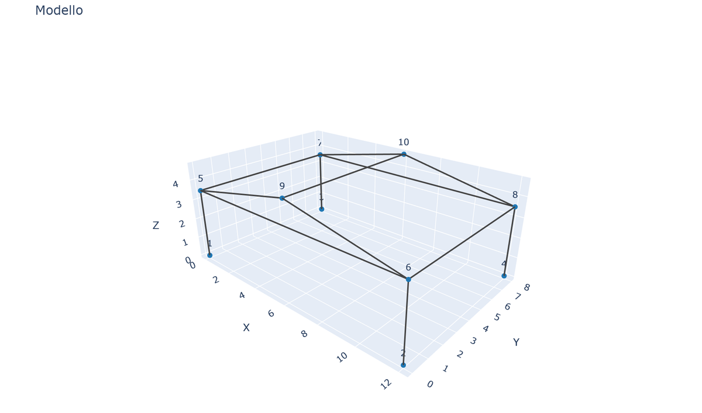 |
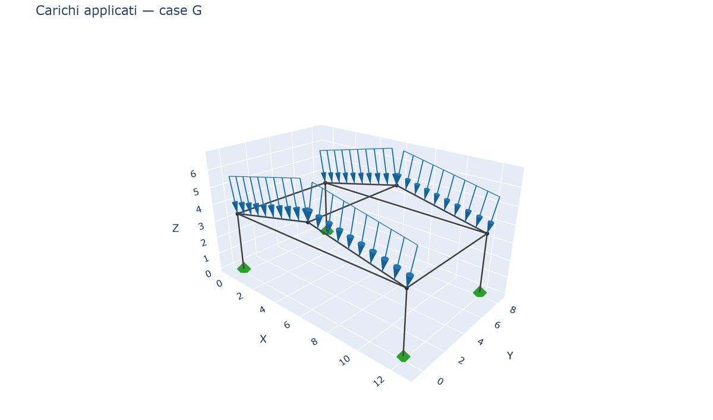 |
| Carichi W (vento) | Configurazione deformata | Momento Mz |
|---|---|---|
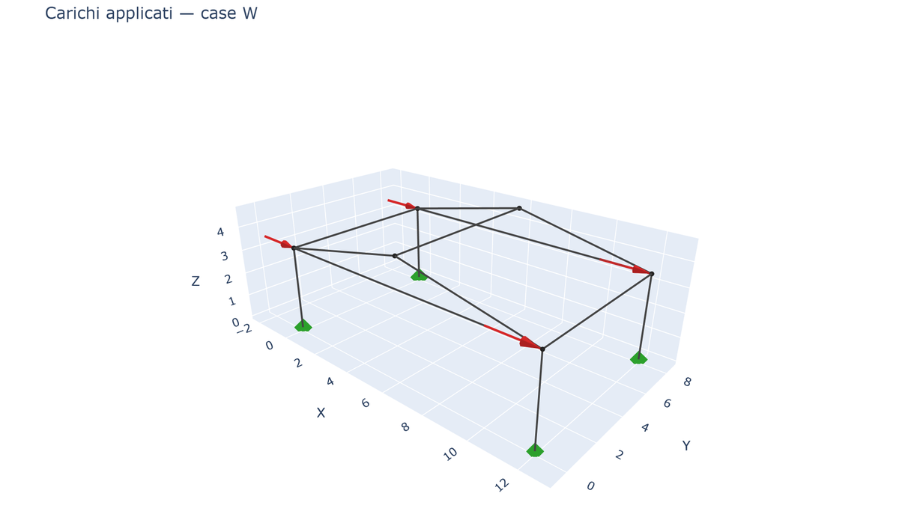 |
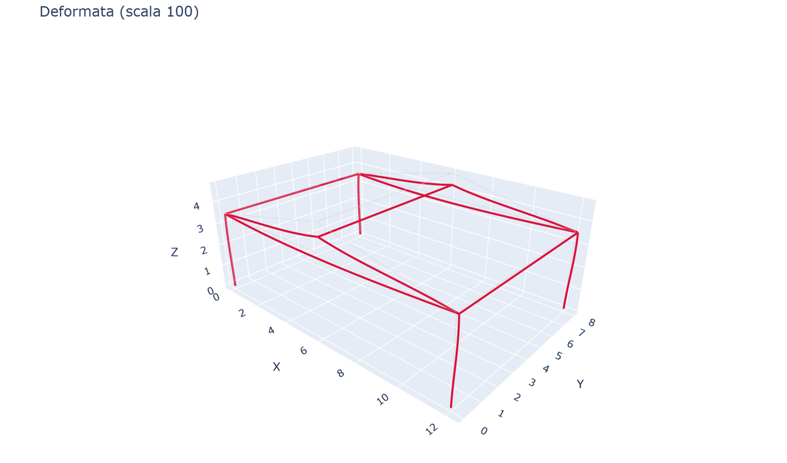 |
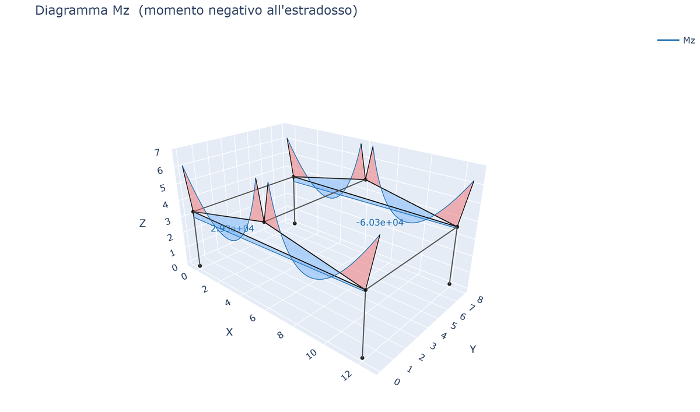 |
| Sforzo assiale N | Reazioni |
|---|---|
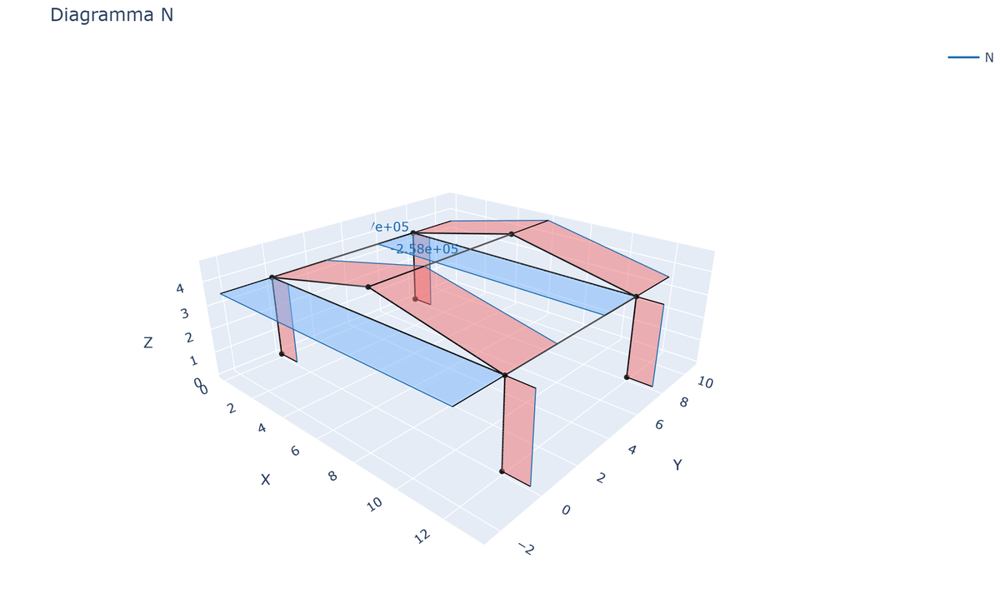 |
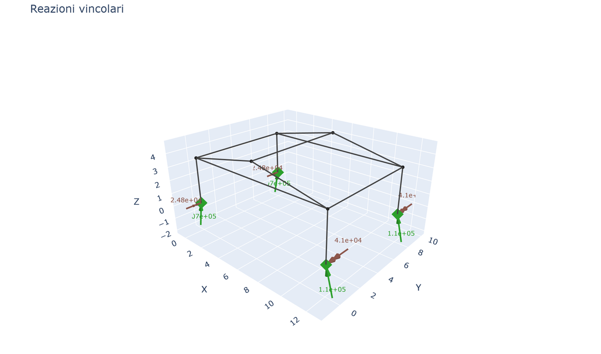 |
| Modo 1 (T=0.33s) | Modo 2 (T=0.18s) | Modo 3 (T=0.17s) |
|---|---|---|
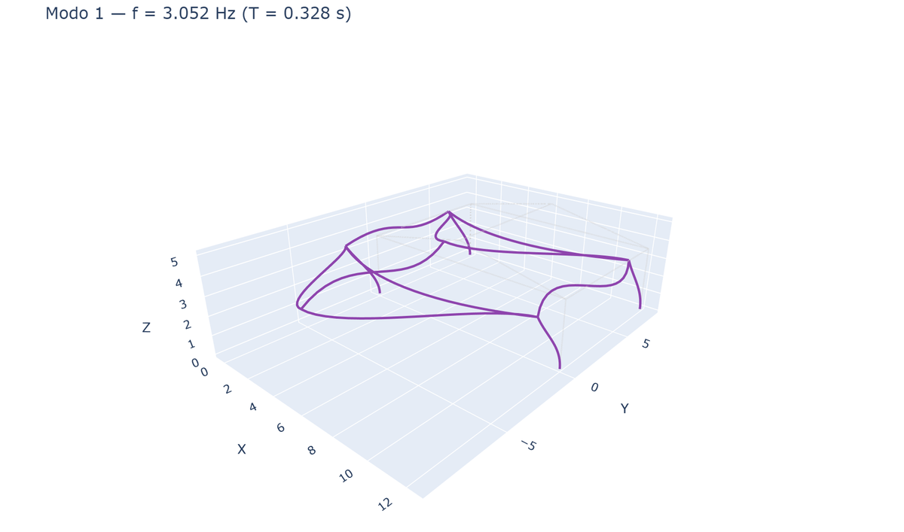 |
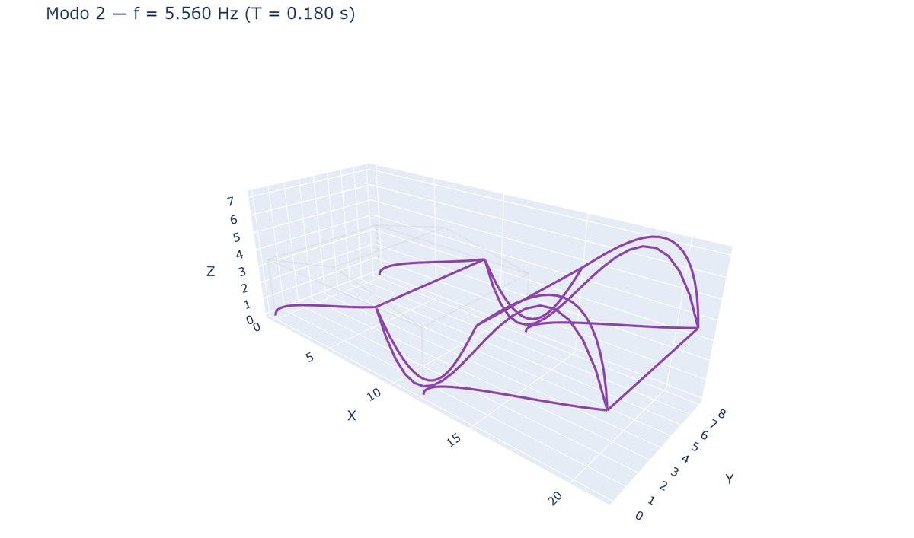 |
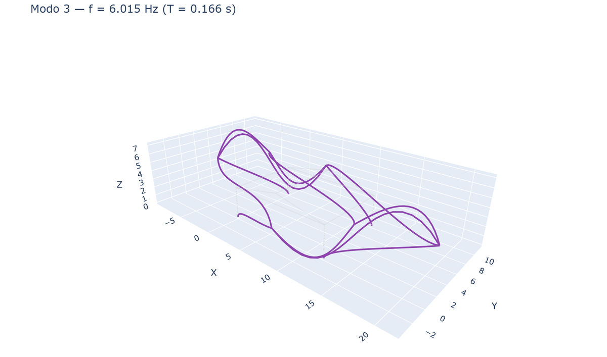 |
Esempio 30 — Validazione con la letteratura: telaio a portale vs soluzione analitica
Validazione di beamfeapy rispetto al classico problema del telaio a portale utilizzando il metodo degli spostamenti (slope-deflection) (Hibbeler, Structural Analysis; Kleinlogel, Rigid Frame Formulas).
Definizione del problema
- Luce L = 10 m, altezza colonne h = 5 m
- Incastrato alla base di entrambe le colonne
- Carico uniformemente distribuito q = 20 kN/m sulla trave
- Stesso EI per tutti gli elementi (E = 210 GPa, I = 5.0×10⁻⁴ m⁴)
Soluzione analitica (slope-deflection, senza spostamento laterale)
Per un telaio a portale simmetrico con carico simmetrico:
$$\theta = \frac{q L^2}{24 EI \left(\frac{2}{h} + \frac{1}{L}\right)}$$
$$M_{base} = \frac{2EI}{h} \theta, \quad M_{top} = \frac{4EI}{h} \theta$$
$$M_{joint} = \left|\frac{2EI}{L} \theta - \frac{qL^2}{12}\right|$$
$$M_{midspan} = \frac{qL^2}{8} - M_{joint}$$
$$H = \frac{M_{base} + M_{top}}{h}, \quad V = \frac{qL}{2}$$
Risultati del confronto
| Grandezza | Analitica | FEM (beamfeapy) | Errore |
|---|---|---|---|
| H [kN] | 40.00 | 39.62 | 0.95% |
| V [kN] | 100.00 | 100.00 | 0.00% |
| M_base [kNm] | 66.67 | 65.24 | 2.14% |
| M_joint [kNm] | 133.33 | 132.86 | 0.36% |
| M_midspan [kNm] | 116.67 | 117.14 | 0.41% |
Tutti gli errori < 3% — la piccola discrepanza su M_base è dovuta alla deformabilità assiale delle colonne (inclusa nel FEM, trascurata nella formula analitica).
Script
Mostra lo script completo
"""Example 30 - Literature validation: portal frame vs analytical solution."""
import _common # noqa: F401
from beamfeapy import Material, Model, Section, postprocess
from beamfeapy.plotting import (
plot_deformed, plot_diagram, plot_loads, plot_model, plot_reactions,
)
def analytical_portal_frame(q, L, h, EI):
theta = q * L**2 / (24 * EI * (2/h + 1/L))
M_base = 2 * EI / h * theta
M_top = 4 * EI / h * theta
M_joint = abs(2 * EI / L * theta - q * L**2 / 12)
M_midspan = q * L**2 / 8 - M_joint
H = (M_base + M_top) / h
V = q * L / 2
return {"H": H, "V": V, "M_base": M_base, "M_joint": M_joint, "M_midspan": M_midspan}
def main():
L, h, q = 10.0, 5.0, 20e3
E, I_val, A, J = 210e9, 5.0e-4, 0.01, 1e-5
mat = Material(E=E, nu=0.3)
sec = Section(A=A, Iy=I_val, Iz=I_val, J=J)
m = Model()
m.add_node(1, 0, 0, 0); m.add_node(2, 0, 0, h)
m.add_node(3, L, 0, h); m.add_node(4, L, 0, 0)
m.add_beam(1, 1, 2, mat, sec)
m.add_beam(2, 2, 3, mat, sec, ref_vector=(0, 0, 1))
m.add_beam(3, 3, 4, mat, sec)
m.fix(1); m.fix(4)
m.add_distributed_load(2, "fy", -q)
res = m.solve()
ana = analytical_portal_frame(q, L, h, E * I_val)
# Compare and print results...
# (see full script in usage_examples/30_validazione_letteratura.py)
_common.save(plot_model(m), "ex30_portal_validation_model.html")
_common.save(plot_loads(m), "ex30_portal_validation_loads.html")
_common.save(plot_deformed(res, scale=200), "ex30_portal_validation_deformed.html")
_common.save(plot_diagram(res, "Mz"), "ex30_portal_validation_Mz.html")
_common.save(plot_reactions(res), "ex30_portal_validation_reactions.html")
Galleria
| Modello | Carichi | Configurazione deformata |
|---|---|---|
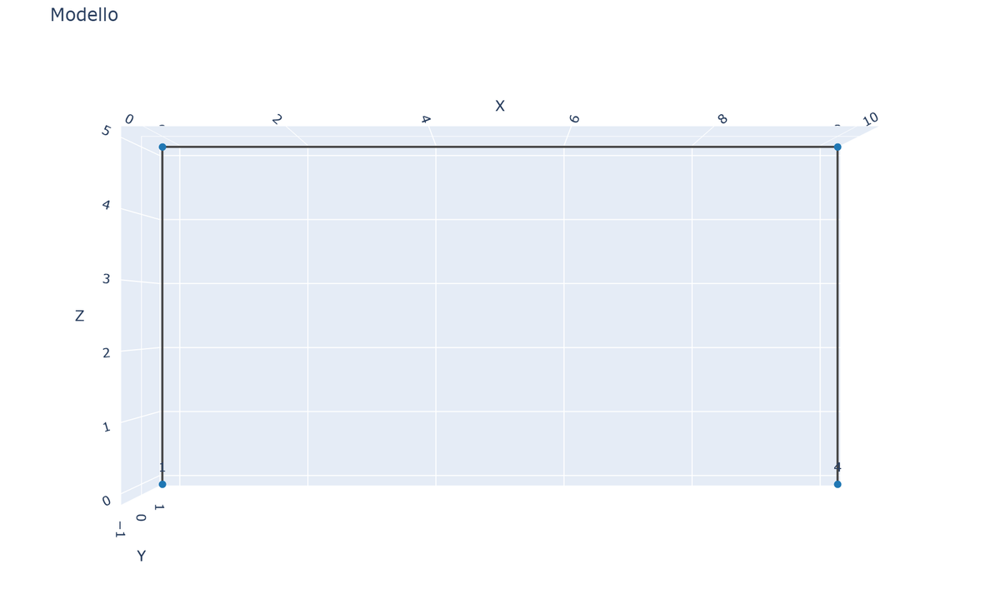 |
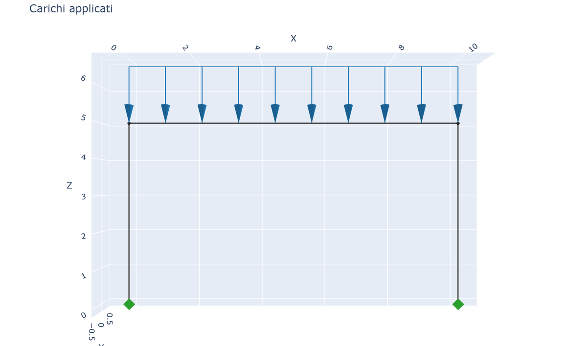 |
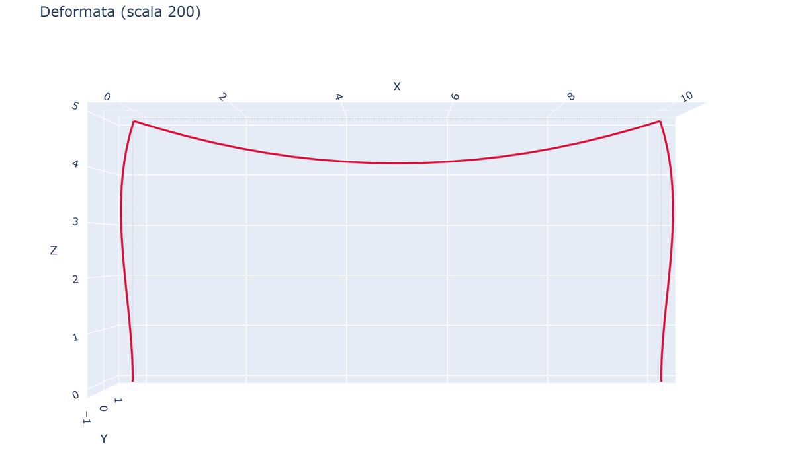 |
| Momento Mz | Sforzo assiale N | Taglio Vy |
|---|---|---|
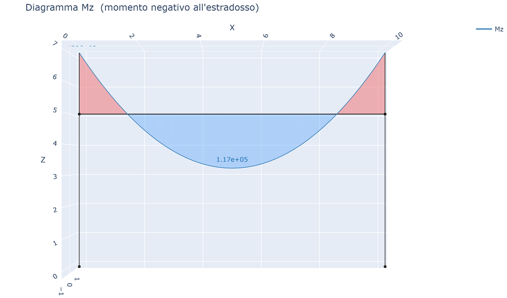 |
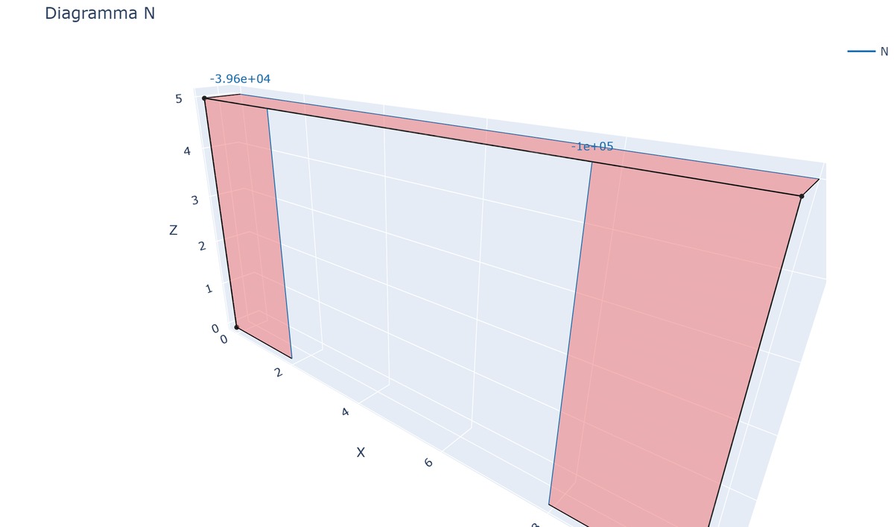 |
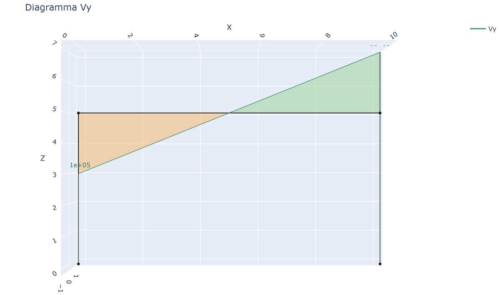 |
| Reazioni |
|---|
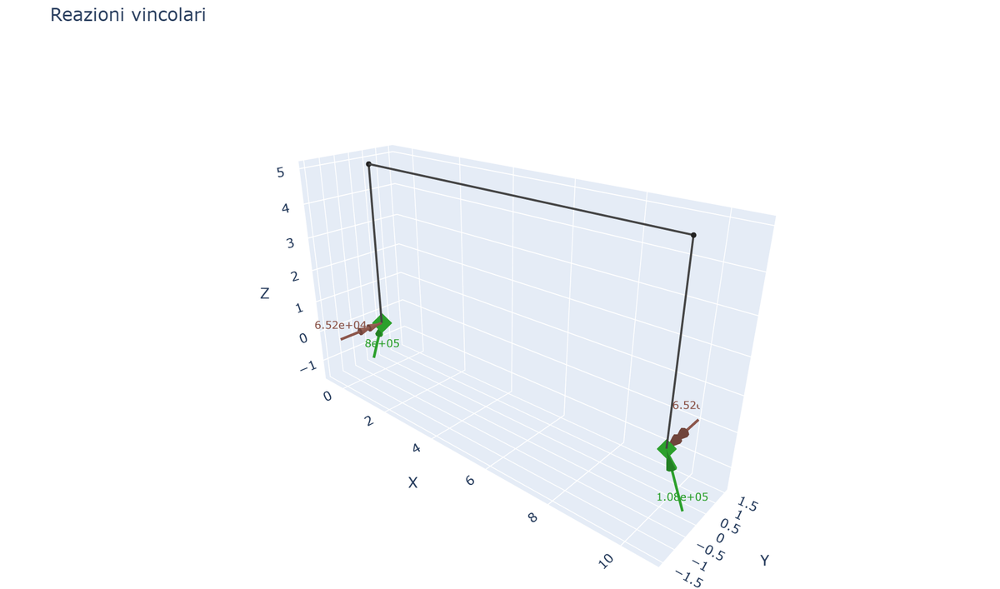 |